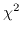

Next: Computation Up: Image Deconvolution Previous: Computation
This discussion was lifted from Tim Cornwell's article in the NRAO imaging workshop (1988).
CLEAN approaches the deconvolution problem by using a procedure which selects a plausible image from the set of feasible images. This makes a noise analysis of CLEAN very difficult. The Maximum Entropy Method (MEM) is not procedural. The image selected is that which fits the data, to within the noise level, and also has maximum entropy. This has nothing to do with physical entropy, it is just something that when maximised, produces a positive image with a compressed range of pixel values. The latter aspect forces the MEM image to be smooth, and the positivity forces super-resolution on bright, isolated objects.
One general-purpose definition of entropy (championed by Gull and Skilling) is
The requirement that each visibility be fitted exactly by the model usually invalidates the positivity constraint. Therefore, data are incorporated with the constraint that the fit, , of the predicted visibility to that observed, be close to the expected value:
Maximising H subject to the constraint that be equal to
its expected value leads to an image which fits the long spacings too well,
and the zero and short spacings poorly. To remedy this, an added constraint
can be added to the problem. Typically this is a flux constraint, which
ensures that the flux density in the maximum entropy image is correct. That is,
the flux density of the maximum entropy image,